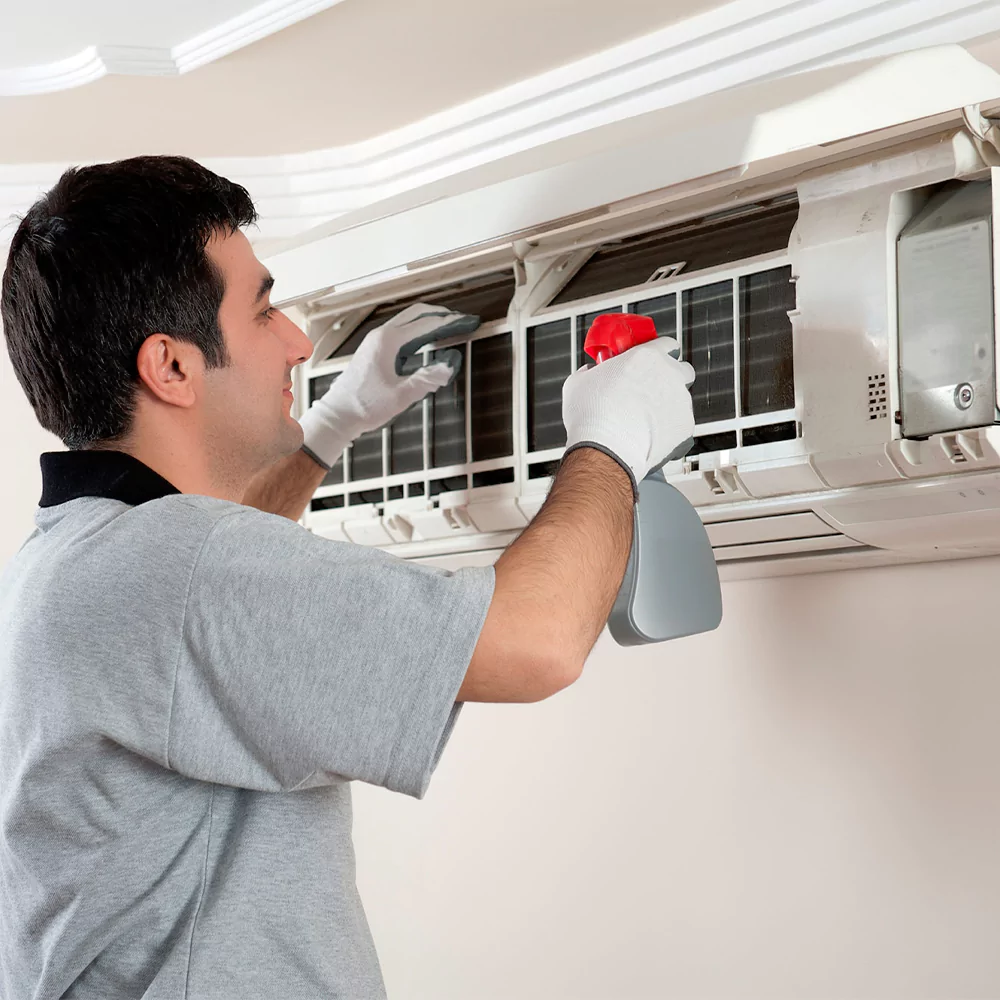

ارخص مكيفات سبليت الرياض 0559865517

نظرًا لارتفاع درجات الحرارة في مدينة الرياض خلال فصل الصيف، أصبح البحث عن ارخص مكيفات سبليت الرياض يجمع بين الجودة والسعر المناسب أمرًا ضروريًا لكل منزل أو مكتب، ورغم تنوع العلامات التجارية والموديلات في السوق، إلا أن العثور على خيار يوفر التبريد الفعّال مع استهلاك اقتصادي للطاقة وبسعر في متناول اليد يتطلب بعض البحث والمقارنة، هنا تأتي أهمية الاستعانة بشركة نقل الرياض لتكون شريكك المثالي، حيث أن الشركة تقدم لك كافة الخدمات والنصائح للحصول على ارخص مكيفات سبليت الرياض، كما تقدم لك جميع خدمات الصيانة لتضمن أداء مكيفك لأطول فترة ممكنة وتفادي الأعطال المفاجئة، تواصل الأن مع شركة نقل الرياض واستعد لصيف ممتع خالي من الحرارة.
في هذا المقال، نستعرض لك أبرز النقاط التي تساعدك على اختيار ارخص مكيفات سبليت الرياض، مع مراعاة الجودة والكفاءة والميزات التي تضمن لك راحة تدوم لسنوات.
افضل شركة فك وتركيب مكيفات بالرياض بسعر منافس 0559865517
لماذا يبحث الكثيرون عن ارخص مكيفات سبليت الرياض؟
في ظل ارتفاع درجات الحرارة في مدينة الرياض، أصبح امتلاك مكيف سبليت ضرورة لا غنى عنها للحفاظ على الراحة داخل المنازل والمكاتب، ورغم توفر خيارات عديدة من الماركات العالمية والمحلية، إلا أن الكثير من المستهلكين يتجهون للبحث عن ارخص مكيفات سبليت الرياض لتحقيق التوازن بين الجودة والسعر المناسب، فاختيار المكيف الأقل تكلفة لا يعني التضحية بالكفاءة، بل يمكن العثور على موديلات تقدم أداء تبريد ممتاز مع استهلاك منخفض للطاقة، مما يقلل من فواتير الكهرباء، كما أن توفر عروض من الشركات المتخصصة، مثل الخصومات الموسمية وخدمات التركيب المجانية، يجعل الحصول على ارخص مكيفات سبليت الرياض خيارًا ذكيًا يلبي الاحتياجات دون تجاوز الميزانية.
أفضل الأنواع ضمن فئة ارخص مكيفات سبليت الرياض
عند البحث عن ارخص مكيفات سبليت الرياض، ستجد أن هناك عدة ماركات أثبتت كفاءتها في الجمع بين السعر الاقتصادي والأداء الجيد، من بين هذه الماركات:
- أجهزة جري (Gree) المعروفة بقدرتها على التبريد السريع واستهلاك الطاقة المنخفض.
- أجهزة ميديا (Midea) التي تتميز بتصاميم عصرية وهدوء التشغيل.
- كما تحظى أجهزة كلاس برو (ClassPro) بشعبية واسعة بفضل أسعارها المناسبة وضمانها الممتد.
- بالإضافة إلى مكيفات سامسونج وإل جي التي تقدم فئات اقتصادية بخيارات تحكم ذكية. هذه الأنواع تمنح المستهلك فرصة الحصول على ارخص مكيفات سبليت الرياض دون التنازل عن الجودة أو متانة الأداء، خاصة إذا تم شراؤها من شركات موثوقة توفر التركيب والصيانة الاحترافية مثل شركة نقل الرياض.
شركة تنظيف مكيفات حي ظهرة لبن | شركة صيانة مكيفات حي ظهرة لبن 0559865517
مقارنة بين ارخص مكيفات سبليت الرياض من حيث الجودة والسعر
عند اختيار ارخص مكيفات سبليت الرياض، يحرص المستهلك على الموازنة بين الجودة والسعر للحصول على أفضل قيمة ممكنة، فمثلًا، بعض الماركات توفر أسعارًا منخفضة ولكن بجودة متوسطة، بينما هناك علامات تجارية أخرى تقدم أداءً قويًا وضمانًا طويل المدى بأسعار تنافسية، من المهم النظر إلى عوامل مثل كفاءة التبريد، استهلاك الطاقة، مستوى الضجيج، وخدمة ما بعد البيع، وهنا يأتي دور الشركات الموثوقة مثل شركة نقل الرياض، التي لا تكتفي فقط بتركيب المكيفات باحترافية، بل تقدم أيضًا استشارات تساعدك على اختيار النوع الأنسب لاحتياجاتك وميزانيتك، مع ضمان الحصول على ارخص مكيفات سبليت الرياض دون التضحية بمستوى الأداء أو عمر الجهاز.
هل تؤثر الأسعار المنخفضة على كفاءة مكيفات السبليت في الرياض؟
ليس بالضروري أن تكون الأسعار المنخفضة دليل على ضعف كفاءة التبريد، وذلك لأن الكثير من الشركات العالمية بقدم تقنيات حديثة بأسعار تنافسية تناسب الجميع، مما يجعل الحصول على ارخص مكيفات سبليت الرياض أمرًا سهلًا دون التنازل عن الجودة، ولكن يجب الأخذ في الاعتبار أنه يجب الشراء من شركات موثوقة لديها خبرة عالية في المكيفات، فالاختيار العشوائي قد يؤدي إلى شراء أجهزة مكيفات تعمل بجهد أقل وذات عمر افتراضي قصير، يُمكنك الحصول على ارخص مكيفات سبليت الرياض من خلال الاستعانة بشركة نقل الرياض ذات الخبرة العالية في مجال لمكيفات لضمان حصول على مكيف ذات مواصفات عالية.
أماكن بيع ارخص مكيفات سبليت الرياض مع ضمان
توجد ارخص مكيفات سبليت الرياض في الكثير من الأماكن في الرياض، مثل الأسواق والمعارض الكبرى مثل معارض الأجهزة الكهربائية في حي العليا، معارض شارع التخصصي، بالإضافة إلى المتاجر الشهيرة في مدينة الرياض، تقدم هذه الأماكن عروض وخصومات سنوية على أجهزة المكيفات وضمانات تصل إلى عدة سنوات، لضمان نقل و تركيب مكيفك بأمان تواصل مع شركة نقل الرياض، حيث أن الشركة توفر خدمات نقل وتركيب وصيانة المكيفات بدقة عالية، مما يمنح العملاء راحة البال وجودة الأداء.
نصائح قبل شراء ارخص مكيفات سبليت الرياض
قبل شراء ارخص مكيفات سبليت بالرياض،يجب عليك مراعاة بعض النقاط للحصول على أفضل أداء للمكيف بأسعار تنافسية:
- أولًا: يجب عليك التحقق من العلامة التجارية وسجلها في السوق لضمان الحصول على جودة الأداء.
- ثانيًا: التأكد من سعة التبريد المناسبة لمكان وضع المكيف لعدم استهلاك طاقة إضافية وفقدان كفاءته.
- ثالثًا: تأكد من وجود ضمان معتمد وخدمة ما بعد البيع.
- رابعًا: اختر شركة محترفة لنقل وتركيب المكيفات باحترافية عالية مثل شركة نقل الرياض التي تقدم لك جميع خدمات صيانة وتركيب المكيفات بأعلى أداء مم يضمن تشغيل الجهاز بكفاءة عالية من اليوم الأول.
افضل شركة فك وتركيب مكيفات بالرياض بسعر منافس 0559865517
عروض وتخفيضات على ارخص مكيفات سبليت الرياض
مع اقتراب فصل الصيف، تنتشر في الأسواق عروض وتخفيضات مميزة على ارخص مكيفات سبليت الرياض، حيث أن الشركات تسعى لجذب العملاء بأسعار تنافسية وخدمات إضافية مثل الضمان المجاني، للاستفادة من هذه العروض ينصح بالشراء من موزعين معتمدين لضمان جودة المكيف، كما أنه يُمكنك بشركة موثوقة لنقل وتركيب مكيفك مثل شركة نقل الرياض التي تضمن لك خدمة محترفة بأعلى معايير السلامة للحفاظ على كفاءة تشغيل المكيف لأطول فترة ممكنة.
ما الفرق بين المكيفات الرخيصة والعادية في السوق السعودي؟
غالبًا ما تتمثل الفروق بين المكيفات الرخيصة والعادية في السوق السعودي، بين عوامل الجودة، الكفاءة والضمان، فالمكيفات الرخيصة تتميز بأسعارها المنخفضة بسبب استخدام خامات أقل تكلفة أو تقليل بعض المميزات الاضافية مثل تقنيات توفير الطاقة، بينما المكيفات العادية تتميز بعمر افتراضي طويل، أداء تبريد عالي، مع ذلك هناك مكيفات ذات أسعار منخفضة وتتميز بكفاءة عالية ولكن يجب اختيار ماركات موثوقة وتأكد من وجود ضمان معتمد.
تنظيف مكيفات حي السويدي الرياض 0559865517 بأفضل الأسعار
كيف تختار ارخص مكيف سبليت في الرياض دون التضحية بالجودة؟
اختيار ارخص مكيفات سبليت الرياض لا يعني بالضرورة التنازل عن الجودة، بل يعتمد على خطوات ذكية تبدأ بتحديد احتياجاتك من حيث قوة التبريد المناسبة لمساحة الغرفة، ثم مقارنة الماركات التي تقدم أفضل توازن بين السعر والمواصفات، يُنصح بالبحث عن الموديلات التي تحمل شهادة كفاءة الطاقة لضمان تقليل استهلاك الكهرباء، وقراءة تقييمات المستخدمين لمعرفة الأداء الفعلي، كما يجب التأكد من أن المكيف يأتي بضمان معتمد وخدمة ما بعد البيع. وعند الشراء، يمكنك الاعتماد على شركة نقل الرياض لتركيب المكيف باحترافية وضبطه بأفضل طريقة، مما يضمن لك أقصى كفاءة وأطول عمر تشغيلي حتى لو كان المكيف من الفئة الاقتصادية.
في نهاية المطاف، لقد تعرفنا على كل ما يخص ارخص مكيفات سبليت الرياض، كيفية الحصول عليها بطريقة موثوقة دون التضحية بالجودة أو الكفاءة، وذلك من خلال البحث الجيد، ومقارنة العروض، وضمان التركيب الاحترافي من خلال شركة نقل الرياض، التي توفر خدمات تركيب وصيانة تضمن لك استمرارية الكفاءة والحفاظ على العمر الافتراضي للمكيف.
الأسئلة الشائعة حول ارخص مكيفات سبليت الرياض
ما هي أفضل العلامات التجارية التي تقدم ارخص مكيفات سبليت الرياض؟
هناك علامات تجارية تقدم توازنًا بين السعر والجودة مثل Gree، Media، وTCL، وكلها متوفرة في السوق السعودي بأسعار مناسبة.
هل من المهم الاستعانة بفني تركيب محترف لتركيب المكيف؟
نعم يجب الاستعانة بشركة محترفة مثل شركة نقل الرياض لتضمن لك الحفاظ على مكيفك لأطول فترة ممكنة